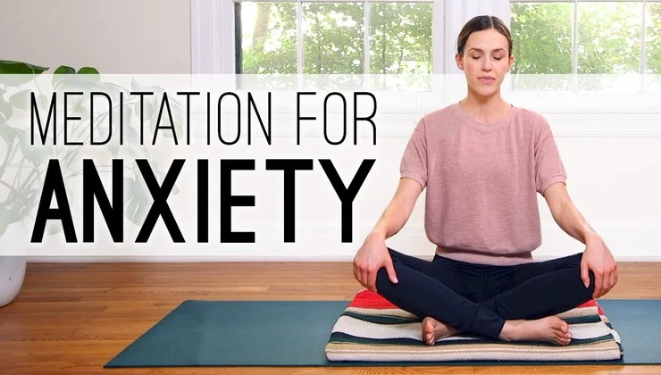

תוכן
ברוכים הבאים לעמוד התוכן שלנו! כאן תוכלו למצוא מגוון רחב של מאמרים, טיפים ומשאבים שיעזרו לכם להכיר את עצמכם טוב יותר ולנהל את הרגשות שלכם בצורה טובה יותר.



ברוכים הבאים לעמוד התוכן שלנו! כאן תוכלו למצוא מגוון רחב של מאמרים, טיפים ומשאבים שיעזרו לכם להכיר את עצמכם טוב יותר ולנהל את הרגשות שלכם בצורה טובה יותר.